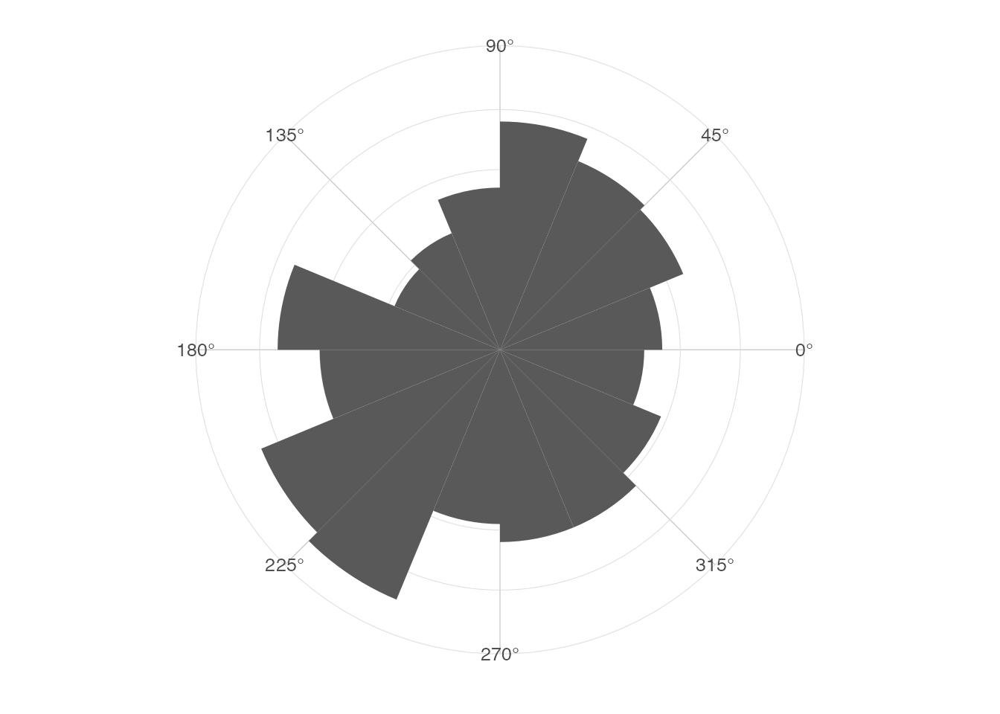
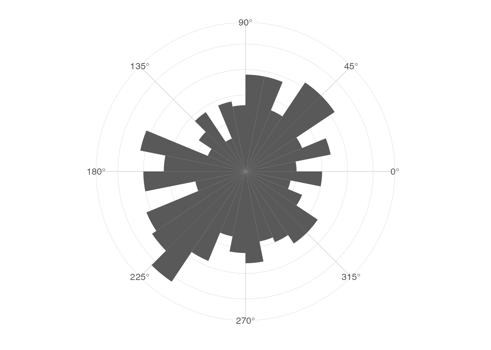
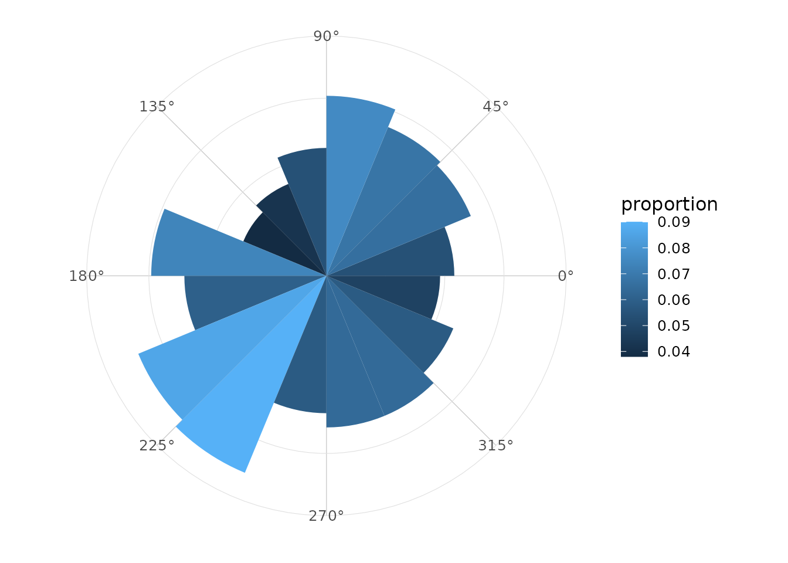
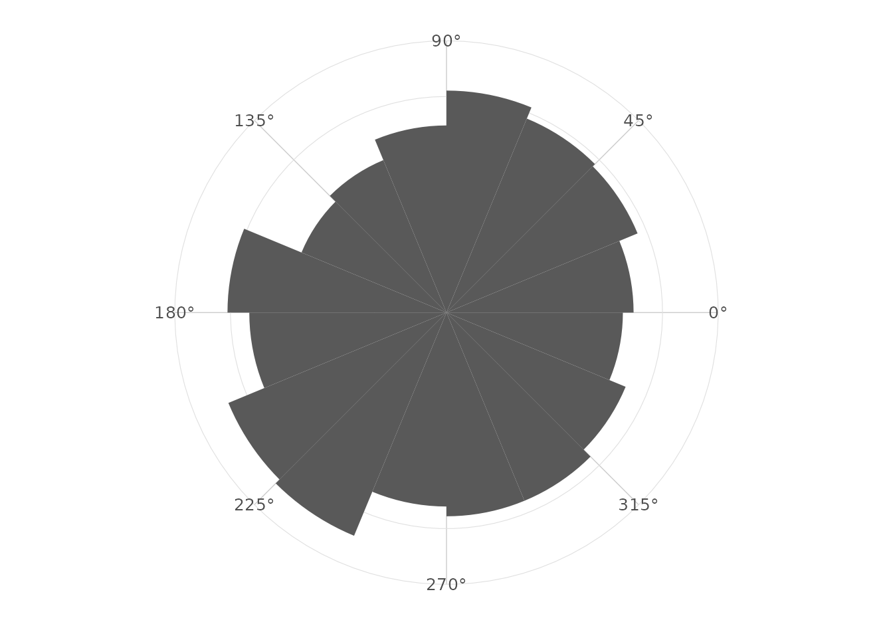
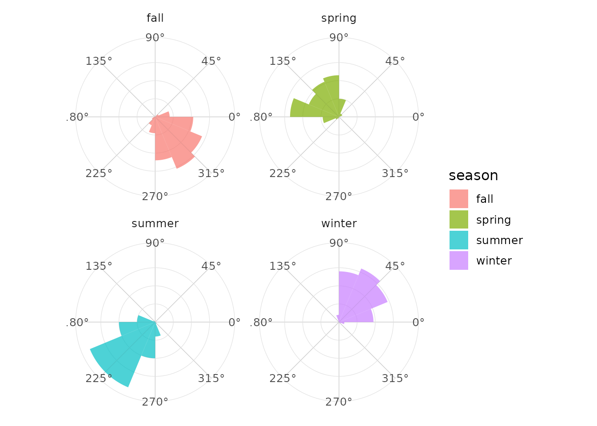
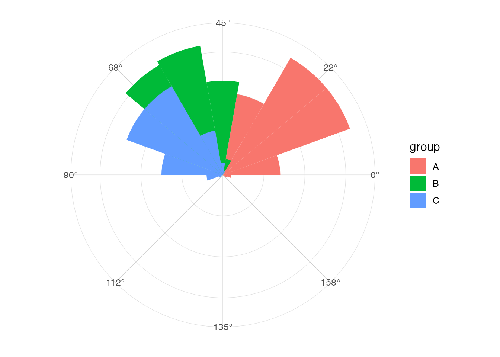

Definition
A rose diagram is a circular histogram. Angles are grouped into bins around a periodic interval, and bin frequencies are displayed radially.
Linear versus circular histograms
The discontinuity between 0 and 2 * pi is
artificial. A circular display places these two values next to each
other.
library(ggplot2)
library(ggcircular)
ggplot(wind_directions, aes(x = direction)) +
geom_rose(bins = 16) +
scale_x_circular_degrees() +
coord_circular() +
theme_rose()
Choosing the number of bins
Fewer bins emphasize broad directional patterns. More bins reveal local structure but increase sampling variability.
ggplot(wind_directions, aes(x = direction)) +
geom_rose(bins = 32) +
scale_x_circular_degrees() +
coord_circular() +
theme_rose()
Counts, densities and proportions
The normalize argument controls the computed radial
variable. The computed variables are also available through
after_stat().
ggplot(wind_directions, aes(x = direction)) +
geom_rose(aes(fill = after_stat(proportion)), bins = 16, normalize = "proportion") +
scale_x_circular_degrees() +
coord_circular() +
theme_rose()
Area versus radius
When area = TRUE, the displayed radial height is
square-root transformed. This can help when comparing frequencies by
visual area.
ggplot(wind_directions, aes(x = direction)) +
geom_rose(bins = 16, area = TRUE) +
scale_x_circular_degrees() +
coord_circular() +
theme_rose()
Groups and facets
Groups can be represented with fill, colour or facets.
ggplot(wind_directions, aes(x = direction, fill = season)) +
geom_rose(bins = 16, alpha = 0.7) +
facet_wrap(~ season) +
scale_x_circular_degrees() +
coord_circular() +
theme_rose()
Axial data
For axial data, use axial = TRUE and a scale limit of
c(0, pi).
ggplot(axial_orientations, aes(x = orientation, fill = group)) +
geom_rose(bins = 18, axial = TRUE) +
scale_x_circular_degrees(limits = c(0, pi)) +
coord_circular() +
theme_rose()